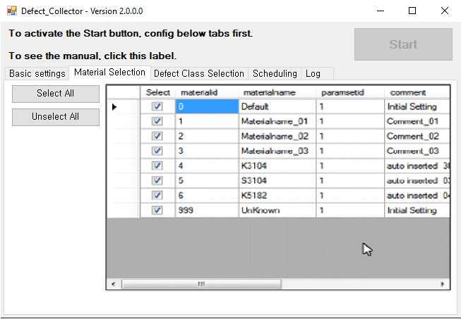
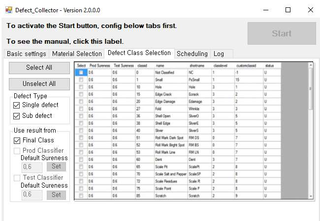

프로젝트 개요
Defect_Collector는 소규모 작업 그룹을 위한 단일 사용자용 결함 추적 시스템입니다. UI, 비즈니스 로직, 데이터가 하나의 Access MDB 파일로 구성되어 있어, 별도의 설치나 인프라 구성 없이 즉시 현장에 도입할 수 있습니다.
시스템 아키텍처
단일 파일 기반의 모놀리식 구조로 설계되었으며, 모든 폼, 보고서, VBA 모듈, 테이블이 archive.mdb 내에 포함됩니다. 사용자가 Access 폼을 통해 데이터를 입력하면 VBA 이벤트 핸들러가 테이블에 직접 데이터를 기록하며, 동일한 테이블을 참조하여 보고서를 생성합니다.
주요 설계 특징
Access 기반 단일 파일 아키텍처 구현으로 별도 설치 불필요
내장 VBA 로직 활용을 통한 신속한 프로토타이핑
동일 환경 내 데이터 및 UI 통합 관리
Git 연동을 통한 소스 코드 추적성 확보 및 향후 마이그레이션 대비
기술 스택
데이터베이스 엔진은 Jet 4.0 기반의 Microsoft Access를 사용하며, 모든 비즈니스 로직은 VBA(Visual Basic for Applications)로 구현했습니다. Access 내장 폼과 보고서로 사용자 인터페이스를 처리하고, 텍스트 기반 소스 관리 도구를 연동하여 Git 버전 관리 기반을 구축했습니다.
| 계층 | 기술 |
|---|---|
| 데이터베이스 | Microsoft Access (Jet 4.0) |
| 애플리케이션 로직 | VBA |
| 사용자 인터페이스 | Access Forms & Reports |
| 데이터 액세스 | DAO / ADO (implicit) |
| 버전 관리 | Git |
| 개발 환경 | Microsoft Access VBE, Visual Studio .gitignore |
엔지니어링 판단
모든 기능을 단일 파일에 통합하여 개발 기간을 단축하고 배포 절차를 간소화했습니다. VBA 내장 기능을 활용해 외부 라이브러리 의존성을 제거했으며, 동일한 환경 내에서 데이터와 UI를 일관성 있게 관리하도록 설계했습니다.
운영 및 유지보수
파일 기반 구조는 소규모 작업 환경에서 신속하게 구동되지만, 동시 다중 접속 및 대용량 데이터 처리에는 물리적인 제한이 있습니다. 데이터 백업은 MDB 파일 복사 방식으로 수행하며, 소스 변경 관리는 Git과 수동 모듈 내보내기(Export) 방식을 병행하여 관리합니다.
UI 스크린샷
메인 폼 화면

데이터 입력 폼
보고서 출력 화면
검색 필터 화면
데이터 아카이브 관리

결함 통계 대시보드

설정 화면